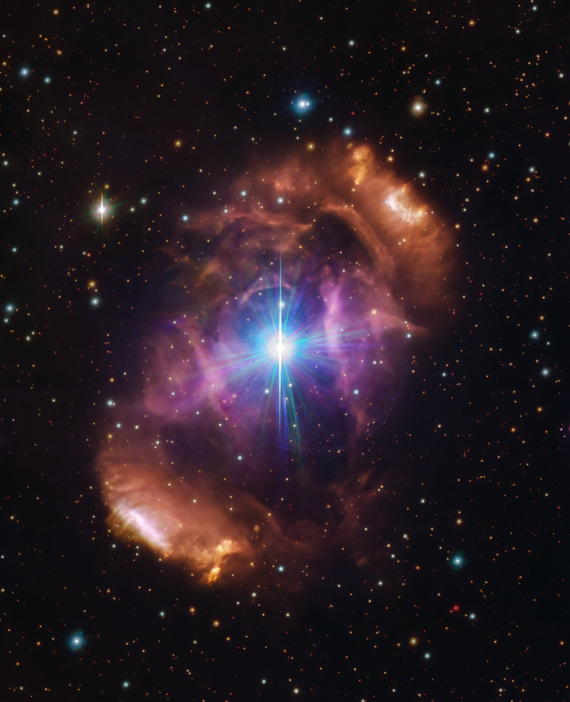

ESTRELLAS
¿Que es una estrella?
Una estrella es una esfera gigante de gas caliente,principalmente hidrogeno y helio que brilla por la energia de reacciones nuclerares en su interior.Esas reacciones convierten el hidrogeno en helio,liberando una enorme cantidad de energia y luz.
¿Como se crean?
Todo empieza en una nebulosa,una gran nube de gas y polvo en el espacio

La gravedad hace que partes de esa nube se junten y formen una bola cada vez mas densa y caliente
Cuando la temperatura y presion en el centro son lo suficiente altas,comienza la fusion nuclear
¡NACE UNA ESTRELLA!
El ciclo de vida de una estrella depende de su tamaño:
Estrella como el sol (pequeña o mediana):
Estrella estable(como nuestro sol)
Gigante roja(se incha al quedarse sin hidrogeno)
Nebulosa planetaria(expulsa sus capas exteriores)
Enana blanca(el nucleo caliente que queda,se enfria con el tiempo